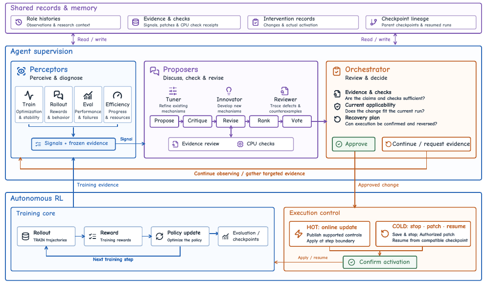
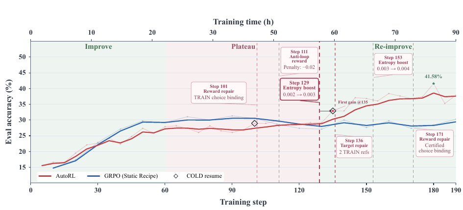
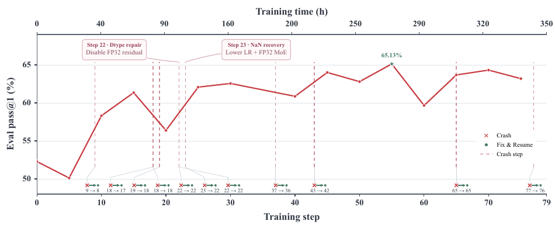
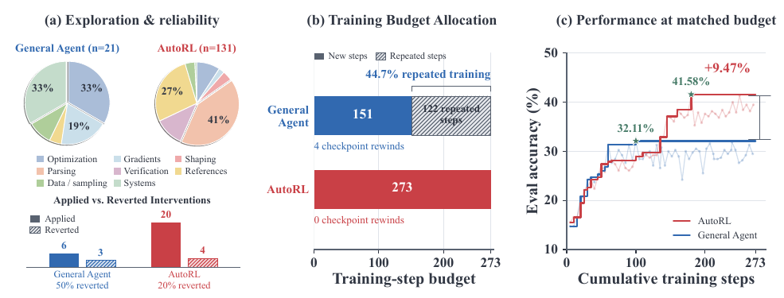
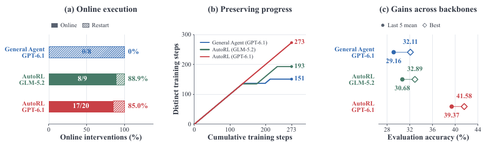

原文重建：把人类 RL 研究员的“盯盘—排障—改配方”搬进在线训练循环
2026 年 11 月 13 日，美团 LongCat 团队（通讯作者 Wenjie Shi）联合香港中文大学、上海科技大学与复旦大学提交论文 AutoRL: A Multi-Agent System towards Autonomous Reinforcement Learning（arXiv:2611.17790）。文章把背景定位在递归自我改进（Recursive Self-Improvement，简称 RSI）的现实过渡阶段：由一个更强的前沿大模型监督并改进另一个模型的强化学习（RL）后训练。
为什么现有的“轮次级”自动科研框架不够用
论文指出，已有自主后训练与自动科研系统（如 LLMZero、AutoSFT、EvoTrainer、Athanor、RSI-Master）大多以完整实验轮次（run-to-run）为单位迭代：跑完一整次训练，看最终结果，再决定下一轮配方。但强化学习与静态监督微调不同——随着策略参数更新，模型自己生成的采样轨迹（rollout）分布也在持续漂移，进而反过来改变后续训练的奖励信号；分布式异步训练还会频繁冒出数值溢出（NaN）、精度不匹配或节点通信故障。
真实的人类 RL 研究员不会干等一场几百小时的训练跑崩才复盘，而是边训边看曲线、翻 rollout 样本、修评分器（grader）、调探索强度。作者把这种过程级（process-level）自主 RL 的工程与研究难点归纳为三条：
- 干预必须及时：数值崩坏、性能倒退或隐性评分器缺陷往往在训练中途出现，等到结束才发现会白烧大量算力。
- 监控与研究节奏冲突：监控需要高频、轻量的持续巡检，而排查平台期或修改机制需要深度上下文调查。把两件事塞进同一个 Agent 上下文，海量的运行日志和采样输出会很快把分析推理挤垮。
- RL 假设的实机验证极其昂贵：看似合理的改动可能建立在错误归因或带漏洞的实现上，若把每个想法都另起一场 GPU 训练去试，算力根本承受不起；系统必须在动用 GPU 前区分“读代码和回放旧样本就能证伪的问题”与“必须靠后续训练验证的问题”。
AutoRL 的三层八角色架构与工作流
针对上述三点，AutoRL 将原本集中在单个研究员身上的职责拆成八个各自拥有独立对话上下文的 Agent（外加一份共享持久化记录），围绕正在运行的 RL 主训练形成闭环：

- 感知层（4 个 Perceptors）：按信号源垂直分工——
Train Perceptor盯损失、梯度、熵、KL 散度、策略比（policy ratio）、裁剪比例与有限值检查；Rollout Perceptor盯训练集生成回复、奖励分布、截断比例、组内统计与评分器行为；Eval Perceptor盯固定评测协议下的聚合分数和脱敏后的失败分析（不泄露原评测题）；Efficiency Perceptor盯已完步数、吞吐与运行日志，区分“正常排队等待”与“进程卡死”。每个 Perceptor 先调用确定性脚本计算滑动窗口的均值、标准差、斜率，再由 LLM 结合明确硬规则（如确认 NaN/Inf、连续多轮评测无新高）决定是否报警。所有报告经由同步观测屏障（synchronous observation barrier）对齐到具体的(run r, step s)，冻结为共同初始证据 \(E_k^0\)。若无异常，训练继续，不触发开会。 - 提案与辩论层（3 个 Proposers）：基于同一份冻结证据 \(E_k^0\)，三名角色先各自独立诊断、防止过早从众：
Tuner专注现有机制内的局部调参；Innovator探索替代机制；Reviewer沿真实代码路径追查实现缺陷与反例。讨论最多持续 5 轮：生成提案 → 质询反驳 → 修订/合并/撤回 → 第 4 轮按 Borda 计分（若有 \(m\) 个候选，第一名得 \(m\) 分递减至 1 分，三者相加）选出至多 2 个决赛候选 → 第 5 轮投票产生 3:0 或 2:1 推荐（若前几轮已 3:0 一致认可同一合规候选可提前结束；保持配方不变NONE同样合法）。修订期间，Proposer 可在隔离的 CPU 工作区读源码、回放已保存的训练集轨迹并跑单元测试，记录PASS / FAIL / INCONCLUSIVE回执；未通过检查或存在未解阻碍的提案禁止发布。 - 调度与执行层（1 个 Orchestrator）：唯一拥有启停、热更、恢复和回滚权限的闸门。它对照当前训练状态审查提案、证据与可验证性，决定批准、拒绝、延后或发起定向补充观测。批准的改动分两条执行通道：支持在线热插拔的走
HOT（在步边界写入在线控制文件，不停机）；涉及修改训练主代码、数据集或重新初始化框架的走COLD（先优雅落盘停机，再授权打补丁并从兼容 checkpoint 恢复）。执行完成后记录激活回执（runtime receipt）与 checkpoint 血缘（lineage），让 Perceptor 知道新曲线对应的是哪一次改动、继承自哪一个父检查点。
四大实证场景与论文报告的主要结果
论文在 Qwen3-1.7B / 4B（公开数据集 DAPO-Math-17K，清洗后 17,390 道数学题，8 张 H800）和 LongCat-Flash-Lite（稀疏混合专家模型，私有 9,340 道数学题用 64 张 H800；700+ 仓库级软件工程任务用 224 张 H800）四个场景上验证 AutoRL。监督底座在 Qwen 主实验中使用 gpt-6.1-sol（高推理强度），在 LongCat 两个实验中使用 glm-5.2，并另在 Qwen3-4B 上对比了原生通用代理 Codex（同用 gpt-6.1-sol，开启全部内置工具）与 glm-5.2 驱动的 AutoRL。Qwen 实验初始配方均为 GRPO（学习率 \(10^{-6}\)，每题采样 8 条，最大回复 8,192 tokens，初始 KL 系数为 0、初始熵系数为 0，且关闭 thinking mode）。
- 九项跨尺度基准对比（Section 3.2）：在 Qwen3-4B 上，AutoRL 在全部 5 项数学基准和 4 项跨领域（通用知识与代码）基准上同时超过静态 GRPO 与原生 Codex。相对静态 GRPO，AIME 2024 从 46.67% 升至 66.67%（+20.00 个百分点），AIME 2025 与 HMMT 2025 均提升 11.67 个百分点，未参与在线监控的 IMO-AnswerBench 从 27.00% 升至 36.75%（+9.75 个百分点），且 MMLU-Pro、GPQA-Diamond、MBPP、LiveCodeBench v6 Hard 均维持正收益（+1.08 至 +2.52）。在 Qwen3-1.7B 上，静态 GRPO 出现了严重的跨领域退化（MBPP 从基座 33.20% 暴跌至 10.95%），而 AutoRL 在通用与代码四项基准上全部高于原始基座（MBPP 达 40.05%，领先静态 GRPO 29.10 个百分点）。
- 缺陷配方的在线抢救（Section 3.3）：作者在 LongCat-Flash-Lite 数学推理上刻意构造了一个“初期能跑、后期会崩”的带缺陷初始配方（简陋评分器 + 无 KL 正则 + 131,072 token 回复上限），连续跟踪 64 步（约 115.5 小时）。静态 GRPO 从 65.53% 一路退化到 56.05%；AutoRL 在零重启的前提下连续做了 6 次代表性 HOT 更新——第 3、6、10、38 步分四次修补选项映射、多段答案拆分、LaTeX/数组与度数解析、空格和单位归一化，第 22、27 步将 KL 系数依次调至 0.001 与 0.01——最终达到 73.16%（领先静态基线 17.11 个百分点）。
- 正常配方的平台期突破（Section 3.4）：在 Qwen3-4B 上对比标准静态 GRPO 与 AutoRL（图 2）。前 100 步 AutoRL 按兵不动，只持续监控并否决了过早加熵的提案；在监控分长期滞留于 27%–29.74% 后，系统于 step 101（COLD 从 checkpoint 100 续训）修补训练集选项绑定，随后在 step 108/121/129 连续三次 HOT 上调熵系数至 0.001 → 0.002 → 0.003，并在 step 111 对“已判错且满足严格循环判据”的回答加入 \(-0.02\) 辅助惩罚。step 135 首次冲破平台上限（32.89%），之后又在 step 136（COLD）修正 2 条训练参考答案、step 153 上调熵系数至 0.004、step 171 用可验证的有限轨道证明证书（verified finite-orbit proof certificate）精修选项绑定，于 step 180 达到峰值 41.58%（比静态 GRPO 同区间峰值 31.32% 高 10.26 个百分点）。

- 224 张 H800、14.7 天异步编程代理长训容错（Section 3.5）：在 28 节点（224 张 H800）全异步 MoE 编程代理训练中（最多 400 轮工具交互、262,144 上下文、允许最多 3 个版本策略延迟），系统在 352.5 小时内遭遇 11 次运行时故障（7 次 NaN、1 次 dtype 不匹配、3 次工作进程/通信异常）。前期 4 次 NaN 仅靠重拉 checkpoint 无法根除；在 step 22（F5）Agent 将 log-ratio 裁剪从 \([-13, 5]\) 收紧至 \([-5, 3]\) 并设概率比上限 5；step 23 仍报 NaN（F6）后，Agent 将学习率与最小学习率从 \(5\times 10^{-6}\) 降至 \(2\times 10^{-6}\)，同时打开 MoE unpermutation 的 FP32 累加与 FP32 残差。结果 FP32 残差引发了新的 dtype mismatch（F7）。AutoRL 识别出冲突源后只撤回 FP32 残差、保留降学习率与 FP32 MoE 累加，从 checkpoint 22 续训后 NaN 几乎消失。SWE 相关任务 pass@1 从 52.29% 升至峰值 65.13%（step 55，+12.84%），第 75 步收于 63.20%（+10.91%）。此外，附录 A.6 披露任务池在续训中经历了非单调动态筛选：
700+ → 656 → 453 → 456（第 4 轮恢复 58 道曾移除题目并新删 55 道）→ 271。

作者对能力边界的坦率复盘
在 Section 4.3 中，作者把 GPT-6.1 驱动的 Qwen3-4B 全部研究记录（168 次讨论、504 次首轮提交、131 个新改动候选、20 个落地计划）按类型拆解，得到了一个极具现实感的结论：110 个候选（84.0%）集中在评分器解析、参考答案纠错与数据清洗；12 个参数调优候选落地 9 个；而仅有的 3 个学习规则重构提案（2.3%，含协方差梯度选择与正优势/高熵 token 加权）无一落地（0/3）。作者据此判断：现有 Agent 已足以承担无人值守的 RL 运维、排障和配方局部精修，但在实验范围内仍未展现出提出根本性方法创新的能力，因此现阶段更务实的模式是“Agent 负责持续监控与渐进研究，人类聚焦概念性突破”。
以上为原论文内容、实验数字与作者立场的完整重建。下文转入本文自己的结构化判断、机制拆解、口径核账与研究反思。
核心判断：剥开“八角色辩论”外壳，真正值钱的三层真相
如果只看摘要，AutoRL 很容易被读成又一篇“多智能体角色扮演打败单 Agent”的论文。但把正文曲线、图 6/7 对照与附录数据拼在一起，会看到三个更扎实、也更耐人寻味的事实：
1. 最硬的创新是控制面工程，不是角色命名
把 RL 训练从批处理改成可观测、可热插拔（HOT/COLD）、可追踪血缘的在线控制系统，是未来即使换上单一超级模型也绕不开的 Agent-Native 基础设施；而 4+3+1 角色拆分更像针对当下 LLM 上下文退化与确认偏误的先验补丁。
2. 赢过 Codex 的 9.47 分来自两笔独立红利
同预算下 AutoRL（41.58%）大幅领先原生 Codex（32.11%），但 GLM-5.2 对照实验暴露出这笔收益其实是两半拼成的：一半靠 HOT 接口省下 44.7% 重跑步数，另一半靠 GPT-6.1 肯去深挖判分器与脏标注——GLM-5.2 用着同样 88.9% 热更新却只拿 32.89%。
3. 84% 修判分器 vs 0% 改算法的双重信号
即便在全社区熟用的 DAPO-Math-17K 上，RLVR 性能仍被大量解析与参考答案噪声卡住；同时 0/3 算法重构被拒，既有当前模型算法发明力的上限，也叠加了单主线实时投票对“重启高风险改动”的制度性保守偏置。
机制拆解：不停机热更新的边界、为什么 Codex 会重跑 122 步，以及三个可跟算例子
1. HOT 热更新究竟改什么？它不是“训练中任意热修代码”
把论文 Section 2.4 与 Appendix A.4 对齐起来看，AutoRL 并没有神奇地给运行中的 GPU 进程动态打任意源码补丁，而是预先在 Megatron-LM + vLLM 后端留出了一个受限的在线控制文件（online-control file），将干预硬切为两类：
其中干预前状态 \(x_k^- = (\theta_k^-, z_k^-, c_k^-)\) 分别代表模型权重 \(\theta\)、优化器/采样器/数据消费进度等运行时状态 \(z\)，以及当前生效配置 \(c\)；\(\oplus\) 表示应用并合并改动 \(\delta_k\)，\(b_k\) 为兼容的完整检查点。
- 什么能走 HOT（不停机）：仅限于后端控制文件预先支持的槽位——KL 与优势估计设置、替换受支持的 policy-loss 对象（如动态改熵系数、clipping 阈值；coding-agent 还放开了学习率）、在 rollout 路径上热挂接/替换 training grader hook，以及优雅停机指令
save-and-stop。任何试图修改控制文件之外源码的 HOT 补丁都会被就绪检查直接拒掉。同步 trainer 在步边界加载，异步后端在派发策略更新前加载；每次必须写全量生效覆盖表（字段置None即还原启动默认值），加载失败则保旧态不崩溃，成功则写下带生效步数的激活回执。 - 什么必须走 COLD（停机重启）：凡是修改训练主代码、直接修改训练集文件或 DataLoader/Sampler（如 Qwen step 136 修 2 条参考答案），或修改需重新初始化底层算子的精度配置（如 Coding-Agent 开关 MoE FP32 累加/残差），必须先落盘停机、申请代码锁打补丁并跑回归测试，再从兼容检查点 \(b_k\) 恢复。
之所以实测里 85% 以上的有效改动都走了 HOT，纯粹是因为作者精准预判了日常 RL 调优最高频动的几样东西（熵/KL/clipping + 判分器钩子）并提前做成了热插拔接口。
2. 为什么原生 Codex 既 0% 热更新，又额外浪费了 122 步（44.7%）？
把图 4（原论文 Figure 6）和图 5（原论文 Figure 7）并排细看，必须严格区分两件常被混为一谈的事：“重启（restart）”不等于“回退检查点（checkpoint rewind）”。


- 第一层：为什么 Codex 0/8 都在重启？ 常规 Megatron-LM + vLLM 训练在启动时一次性加载脚本配置；HOT 控制文件是 AutoRL 框架自带的专属后端接口。同样只是调整熵系数，GPT AutoRL 在线改 8 次、GLM AutoRL 在线改 6 次，而未接入该接口的原生 Codex 3 次全靠重启完成。
- 第二层：重启本身不会制造重复步数——122 步重跑从哪来？ 证据有两条：其一，GPT AutoRL 自己也做了 3 次 COLD 重启，但通过
save-and-stop在最新步落盘续训，重复步数为 0；其二，图 5(b) 清晰显示，原生 Codex（蓝线）与 GLM AutoRL（绿线）在前 135 步都紧贴 \(45^\circ\) 对角线推进，直到 step 135 之后才出现长段水平横盘。按累计步数账本 \(B = U + R\)（\(U\) 为曾抵达的去重步数，\(R\) 为回档后重复走过的步数），Codex 在 \(U \approx 135\) 处水平耗掉约 65 步、短推进到 \(U = 151\) 后又水平耗掉约 57 步，合计 \(122/273 = 44.7\%\)；而拥有 88.9% HOT 能力的 GLM AutoRL 同样在后期出现了 80 步回档重跑（\(273 - 193 = 80\)）。 - 真正原因（事实与推断区分）：原文 4.1 节指出，Codex 落地 6 次改动撤回了 3 次（回退率 50%），每次撤回都靠倒带历史检查点重来，而 AutoRL 的 4 次撤回全经 HOT 原地关闭配置、保留当前权重和优化器状态。结合图 4(c) 还可推断：Codex 在第 100 步就见顶（32.11%）后，倾向于像人类做消融树搜索一样反复回到早期高分检查点换配方分叉重跑，却始终没能打穿瓶颈。需要提醒的是，“原地热改不回档”并非永远更优——如果一次坏改动只是低效，原地调回最省算力；若权重已被 KL=0 练崩或临近 NaN，回档反而是必要止损（AutoRL 在 Coding-Agent 中也多次回到 checkpoint 22）。
3. 三个可跟算的机制例子
为了避免把机制停留在术语层面，下面给出一个原文真实回放算例与两个本文自拟的教学算例（明确区分归属）：
在 GLM-5.2 驱动 Qwen3-4B 的第 43 次讨论中，一个提案想用 reward hook 去掉“截断惩罚”，同时保留“重复惩罚”。设原始题得分为 \(1.0\)，重复惩罚扣 \(0.7\)，四种测试夹具的预期输出应为：无惩罚 \(1.0\)、仅重复 \(0.3\)、仅截断 \(1.0\)、同时重复与截断 \(0.3\)。但初版 hook 在某个辅助查找失败时的 fallback 分支直接绕过了基线 grader，导致四组实测输出全变成 \([1.0, 1.0, 1.0, 1.0]\)——重复惩罚被意外清零。Reviewer 读代码抓出这条 fallback 路径后，Tuner 改为先调用基线 grader 再只撤销截断扣分，CPU 回放拿到 \([1.0, 0.3, 1.0, 0.3]\) 才获准于 step 154 上线。
假设第 4 轮剩余 \(m = 3\) 个候选：\(C_1\)（HOT 调高熵系数）、\(C_2\)（COLD 修 2 条参考答案）、\(C_3\)（COLD 重写梯度加权 loss）。按 AutoRL 规则，排名第 1、2、3 分别得 3、2、1 分，且评审维度显式计入“风险、可逆性与中断训练的代价”。若 Tuner 与 Reviewer 均优先选低中断方案，给出 \(C_1 \gt C_2 \gt C_3\)，而 Innovator 给出 \(C_3 \gt C_1 \gt C_2\)，则三方 Borda 总分为：
即便 \(C_3\) 靠编号平局规则进入第 5 轮决赛，2:1 多数决仍会选出零中断的 \(C_1\)。原文 4.3 节披露的两个正优势/高熵 token 加权提案正是以同样逻辑落选的——并非被证明无效，而是在单主线风险偏好下打不过低成本热调参。
设模型提出的新改动有 \(p_{\text{bug}} = 0.50\) 概率存在隐藏实现漏洞或负收益（接近 Codex 50% 的实测撤回率）。只要在上线前增加一道独立检查与 CPU 回放闸门，即便它不完美——假设能拦下 \(\eta = 0.70\) 的坏改动、同时误杀 \(\alpha = 0.10\) 的好改动——那么通过闸门上线后的漏网坏改动占比（预期撤回率）就会立刻从 \(50\%\) 降至：
这一数值已经非常接近 AutoRL 实测的 20%（4/20）。它提示我们：真正大幅降低线上翻车率的核心物理量是验证不对称性（独立视角 + 确定性代码回放），而未必是五轮多方辩论和 Borda 计分仪式本身。
关键实验数据与口径核账
阅读主表时，有两处口径必须先对齐：第一，Qwen3 训练与评测均关闭 thinking mode，评测温度 0.6，每题独立采样 4 次取均值（数学与通识报平均准确率，代码报 pass@1）；第二，在线监控用的 190 题评估集由 AIME 24（30）+ AIME 25（30）+ HMMT 25（30）+ Beyond AIME（100） 组成，每题采 2 次共 380 条回复。因此下表用星号（*）把完全未进入在线监控循环的五项外推基准单标出来，方便区分“监控域内提升”与“干净的域外泛化”。
| 模型 | 方法 | AIME 24 | AIME 25 | HMMT 25 | Beyond AIME | IMO-AB* | MMLU-Pro* | GPQA-D* | MBPP* | LCB Hard* |
|---|---|---|---|---|---|---|---|---|---|---|
| Qwen3-1.7B | Baseline | 15.00 | 13.33 | 5.00 | 4.50 | 10.25 | 38.85 | 28.79 | 33.20 | 1.57 |
| Qwen3-1.7B | GRPO (Static) | 26.67 | 21.67 | 18.33 | 11.00 | 8.63 | 34.05 | 22.60 | 10.95 | 1.50 |
| Qwen3-1.7B | General Agent | 31.67 | 18.33 | 11.67 | 12.00 | 15.00 | 25.55 | 32.20 | 32.00 | 1.07 |
| Qwen3-1.7B | AutoRL | 30.00 | 30.00 | 18.33 | 12.50 | 14.63 | 44.88 | 34.34 | 40.05 | 2.00 |
| Qwen3-4B | Baseline | 25.00 | 23.33 | 11.67 | 10.50 | 18.44 | 55.88 | 43.43 | 62.55 | 4.93 |
| Qwen3-4B | GRPO (Static) | 46.67 | 45.00 | 20.00 | 26.00 | 27.00 | 57.93 | 44.70 | 63.55 | 5.71 |
| Qwen3-4B | General Agent | 50.00 | 43.33 | 26.67 | 25.00 | 16.06 | 37.73 | 45.33 | 31.80 | 4.50 |
| Qwen3-4B | AutoRL | 66.67 | 56.67 | 31.67 | 32.50 | 36.75 | 59.73 | 47.22 | 65.25 | 6.79 |
注：数值摘自原论文 Table 1 与 Table 2（单位：%），General Agent（原生 Codex）与 AutoRL 均由 gpt-6.1-sol 驱动；IMO-AB* 为 IMO-AnswerBench（400 题），LCB Hard* 为 LiveCodeBench v6 Hard（350 题），带 * 的五列未进入在线监控评测循环。
这张合并表里最反直觉的信息不在数学列，而在右侧四列：静态 GRPO 在 1.7B 上把 MBPP 从 33.20% 砸到 10.95%，原生 Codex 在 4B 上把 MMLU-Pro 砸掉 18.15 个百分点、MBPP 腰斩 30.75 个百分点、IMO-AnswerBench 甚至低于基座；而 AutoRL 只在数学题上做干预，却同时保住并拉升了全部五项未见外推基准。结合初始设定（KL = 0、Entropy = 0）可作合理推断：在无熵与无 KL 约束下，噪声评分器叠加激进调参极易诱导窄格式坍缩；AutoRL 的“修假阴性误杀 + 阶梯加熵（0 → 0.004）+ 防循环惩罚”保住了策略熵与正常表达分布。不过原文未列出 Codex 具体施加的 6 次改动明细，因此 Codex 发生灾难性遗忘的精确诱因尚属未验证项。
提案分布与预算利用账本（Qwen3-4B）
| 维度 / 指标 | General Agent (GPT-6.1) | AutoRL (GLM-5.2) | AutoRL (GPT-6.1) |
|---|---|---|---|
| 273 步监控峰值 / 末五次均值（%） | 32.11 / 29.16 | 32.89 / 30.68 | 41.58 / 39.37 |
| 抵达去重步数 \(U\) / 重跑步数 \(R\) | 151 / 122（44.7%） | 193 / 80（29.3%） | 273 / 0（0.0%） |
| 完整记录在线热更新占比（HOT / 总落地） | 0 / 8（0%） | 8 / 9（88.9%） | 17 / 20（85.0%） |
| 273 步内撤回率（撤回 / 落地） | 3 / 6（50.0%） | 原文未单列 | 4 / 20（20.0%） |
| 全部提案数与主攻方向 | 21（优化/系统/梯度占 85.7%） | 偏优化与 reward shaping | 131（解析/核验/参考/数据占 84.0%） |
| 学习规则重构提案：提出 / 落地 | 4（梯度设计）/ 未单列 | 原文未单列 | 3 / 0（0%） |
注：汇总自原论文 Table 3、Table 7、Table 8、Figure 6 与 Figure 7。完整记录长度分别为 Codex 343 步、GLM AutoRL 478 步、GPT AutoRL 273 步；峰值与去重步数均按 273 累计步统一截断。
深层反思：这类 Multi-Agent 编排到底算不算“智能”？
读完 AutoRL 这类多智能体科研系统，很多一线研究者会产生一种挥之不去的违和感：市面上大量 Agent 论文都在不断发明新角色名字、划不同工具权限、再配上辩论和投票，似乎人人都可以凭直觉再造一套大同小异的轮子——这真的算“智能”吗？
把这种直觉落到第一性原理上，违和感来自论文把三层性质截然不同的东西打包在了一起：
- Agent-Native 控制面工程（会长期留存的硬贡献）：包括滑动窗口指标摘要、HOT/COLD 状态切换协议、全量覆盖防漂移、激活回执与检查点血缘库。哪怕未来出现单一超级模型，它也同样需要这些环境动作与观测接口，就像再聪明的人类研究员也需要 Git、监控面板和热更新开关。但这层属于系统基础设施（Infra / Harness），不是智能本身。
- 人类先验硬编码的组织架构（最容易重复造轮子的脆弱层）：设几个 Perceptor、分 Tuner/Innovator/Reviewer、聊 5 轮还是 2 轮、用 Borda 还是多数决，全部是人在训练前写死的静态组织图。它本质上是在替当前 LLM 的两大短板打补丁——用独立会话做人工上下文隔离（弥补长上下文注意力退化），用独立 Reviewer 做推理期对抗采样（弥补单次生成的确认偏误）。图 5 几乎直接印证了 Bitter Lesson：一模一样的 8 角色精密编排，把底座从 GLM-5.2 换成 GPT-6.1 就暴涨 8.69 分；而把 8 角色全扔掉只用原生 Codex（GPT-6.1），分数（32.11%）竟然和带全套架构的 GLM-5.2（32.89%）几乎打平。
- 罕见的大规模生产实证账本（真正有信息量的科学产物）：131 个提案的真实分布、DAPO-Math-17K 里挖出的几十处解析/参考答案错误、224 卡 14.7 天里自己改出 dtype mismatch 再精准拆弹的完整日志——这些反直觉的现实边界，比“角色划分本身”有价值得多。
第一，决策流从手写变成可学习：何时停下来查日志、花多少算力验证、何时原地热改何时回档，应当是能按信息价值（VOI）随经验优化的策略，而不是永不自我演化的静态流程图；一旦未来底座模型通过长程 Agentic RL 内化了上下文管理与自查习惯，今天大量手工 Multi-Agent 编排都会像早期手工特征工程一样被吞掉，只有底层确定性接口留下来。第二，归因从“看曲线猜”走向可控因果实验：Qwen3-4B 在 step 101–129 连续叠了五刀改动，step 135 涨分后连论文自己也只能写“可能共同起了作用”，系统本身不具备设计最小对照或反事实实验的能力。第三，从“强模型奶弱模型”走向无更强教师的自举：拿 GPT-6.1 给 Qwen3-4B 修数学题参考答案和解析正则，本质仍是强对弱的降维监督；真正决定 RSI 能否成立的难题，是当被训模型本身已是人类与 AI 前沿最强的那一个时，可靠改进信号究竟从哪里来。
核心术语对齐
HOT 指在步边界或策略派发前通过在线控制文件热替换受支持的超参、loss 对象或训练 grader hook，保留显存中的权重 \(\theta\) 与优化器状态 \(z\)；COLD 指涉及源码、数据或底层精度重初始化时，先 save-and-stop 落盘打补丁，再从兼容检查点恢复。证据边界、竞争解释与未披露缺口
结合正文实验设定与附录细节，有五条边界不能跳过：
- 缺失最关键的消融组——单 Agent + 同等 HOT 与 Grader 工具：原生 Codex 既无 HOT 热更新接口（0/8），也无专门的 Rollout/Grader 观测流程。论文在 5.3 节引用 Bertalanič & Fortuna（2026）指出同质模型无引导辩论常增本不增效，却未测试“单个 GPT-6.1 + 相同 HOT 控制文件 + 相同诊断工具 + CPU 回放沙盒”的表现，因此无法把“5 轮多角色辩论与 Borda 投票”的边际贡献从工程接口红利中拆干净。
- 单主线投票的制度性保守偏置：0/3 学习规则提案落地不仅反映底座模型能力上限，也与“在正在烧卡的唯一主线上用风险/中断成本打分”的机制直接耦合。将低风险保活与高方差算法探索绑在同一条主线上，制度本身就会压制结构性改动。
- 在线监控集与主表四项数学榜重叠：AIME 24/25、HMMT 25 与 Beyond AIME 正是每 5 步驱动决策的 190 题监控集（尽管 Eval Perceptor 仅看聚合分与脱敏报告），因此这四项存在一定自适应选择偏差。所幸完全未进监控集的 IMO-AnswerBench（4B 上 +9.75%）与 Table 2 全部四项跨领域基准同样胜出，为泛化主张提供了最干净的反驳依据。
- 单次运行方差、选点口径与监督成本缺失：RL 训练固有方差很高——图 2 前 100 步完全相同配置下，AutoRL 与静态 GRPO 曲线就已相差 2–4 个百分点，而全篇所有实验均为单次运行。此外，附录 A.5 显示三套系统完整运行步数不同（Codex 343、GLM AutoRL 478、GPT AutoRL 273），主表 Table 1/2 称评测于“selected checkpoints”但未公布具体步数；168 轮讨论中高频调用高推理强度
gpt-6.1-sol的 API Token 与美元成本账单也完全未披露。14.7 天 224 卡编程实验无静态基线（约 7.9 万 GPU 小时，工程上可理解），故只能证明自主容错涨点，不能量化其相对人类值守或自动重启脚本的精确净增益。 - 在线修改 TRAIN Grader 的潜在 Reward Hacking 风险：允许 Agent 在训练中修改训练判分器是一把双刃剑——一旦放松判分口径，就能轻松刷高训练奖励而毁掉真实能力。AutoRL 依靠“锁死 EVAL 评测集与评测判分器 + 独立 Reviewer 代码路径审查 + CPU 正负样例回归测试”三道护栏将其稳住，但在缺乏强离线金标验证集的开放任务中，这套防线能否守住尚未得到验证。
研究与工程启发：两个可检验预测与对 RLVR 奖励设计的启示
可检验预测一：用“主线保活 + 影子短分支”拆开“不会创新”与“不敢创新”
如果把 AutoRL 的单主线架构改造成双轨模式——主线只允许低风险 HOT 调参、排障与判分器修复，同时为 Innovator 的学习规则改动开放独立的 15–20 步影子短分支（shadow branch）或小规模代理验证，并从 Borda 排序里移除对主线中断成本的惩罚——就能直接检验 0/3 算法提案的真正死因。判别标准：若学习规则提案的落地率与短分支胜率显著抬升，说明原瓶颈主要是单主线风险厌恶偏置；若即便解除中断惩罚，提案仍在短分支或后续主线中大规模失效，才真正证实瓶颈落在当下模型的算法发明能力本身。
可检验预测二：剥离 Multi-Agent 辩论后，真正不可替代的核心角色大概率是“独立 Reviewer”
在 Qwen3-4B 同一任务上，若把原生单 Agent Codex 补齐与 AutoRL 相同的 HOT 在线控制文件、Rollout/Grader 抽样检查工具与 CPU 回放沙盒，我预测其成绩会从 32.11% 显著逼近 41.58%，因为 44.7% 的重跑浪费与“不看判分器”的视角盲区都被同时消除。真正容易掉链子、单 Agent 很难靠自我提示彻底替代的环节，是独立于代码修改者的只读 Reviewer + 强制执行的回归夹具检查（用来打破确认偏误、压低线上撤回率），而不是多轮 Borda 投票。
对 RLVR 与自适应奖励设计的现实启示
AutoRL 最值得 RL 后训练研究者带走的工程直觉其实很简单：在真实 RLVR 中，“静态 Verifier”往往是个假象。随着策略变强，模型会不断踩出未曾预料的输出格式、等价表达与数据集原本埋着的错误参考答案，把开局正常的静态判分器踩穿，并在无熵/无 KL 约束下引发跨领域格式坍缩。将判分器视作训练过程中需要持续体检和回归验证的“活组件”，同时用不可变的独立评测锚点与正负例回归夹具锁死修改边界，可能是当前性价比最高的一类 RL 基础设施升级。
想把“过程级在线后训练闭环”与“不可重跑的前沿预训练 RSI 闭环”对照着读，可衔接同日笔记《No Second Run：前沿预训练里的 RSI，到底能闭合哪些环？》；若关心数据研究 Agent 在递归迭代中的真实退化边界，可延伸阅读《RSIBench-Data 深读：数据研究 agent 已能发现改进，却还不会可靠递归改进》。
证据边界与资料索引
本文全部机制描述、实验表格数值与附录故障日志均核对自 arXiv:2611.17790v1（2026 年 11 月 13 日提交，23 页）正文、附录及原论文图表，均为原作者报告值，未做独立训练或评测复现。截至 2026 年 11 月 19 日，作者未公开源码仓库、完整干预日志与模型权重，Hugging Face 论文页尚未收录该条目。文中“单主线 Borda 投票保守偏置”与“验证不对称性压缩撤回率”为本文自拟教学算例；两项实验预测与对多智能体编排的批判均属本文独立判断，不代表原作者立场。
- Simon Tang, Wenjie Shi, Yongjing Yin, et al. (2026-11-13). AutoRL: A Multi-Agent System towards Autonomous Reinforcement Learning (arXiv:2611.17790)（HTML 全文 / PDF 原稿）。
- Q. Yu et al. (2025). DAPO: An Open-Source LLM Reinforcement Learning System at Scale (arXiv:2503.14476)（本文 Qwen3 数学实验所用
DAPO-Math-17K数据来源）。 - H. Liu et al. (2026). Scaling Embeddings Outperforms Scaling Experts in Language Models (arXiv:2601.21204)（本文
LongCat-Flash-Lite基座参考）。 - Y. Zhou et al. (2026). Athanor: An Agent-Native System for Autonomous Post-Training Research (arXiv:2610.21055)（同期轮次级自主后训练代表对照）。
- H. Fang et al. (2026). LLMZero: Discovering Adaptive Training Strategies for RL Post-Training via LLM Agents (arXiv:2606.18388)。
- Q. Fu et al. (2026). AgentJet: A Distributed Swarm Training Framework for Agentic Reinforcement Learning (arXiv:2606.04484)。
- G. Chen et al. (2026). EvoTrainer: Co-Evolving LLM Policies and Training Harnesses for Autonomous Agentic Reinforcement Learning (arXiv:2606.03108)。
- B. Bertalanič & C. Fortuna (2026). The Cost of Consensus: Isolated Self-Correction Prevails Over Unguided Homogeneous Multi-Agent Debate (arXiv:2605.00914)（原论文 5.3 节引用的多智能体辩论反面实证）。